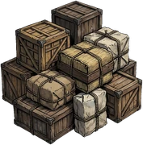
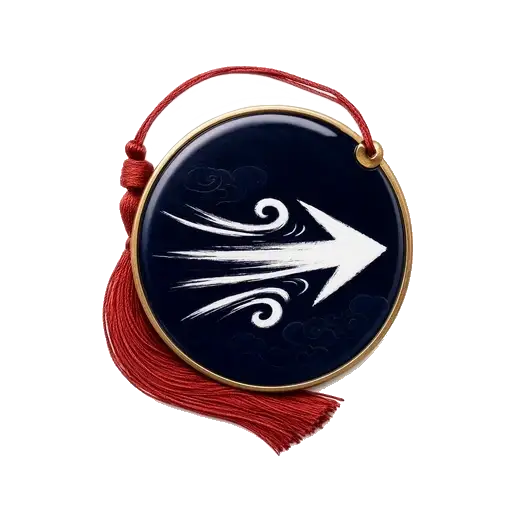

↻ 橫向遊玩
操作與自定義
操作與自定義
鍵盤
滑鼠與觸控
手把
按鍵設定
選擇操作後按下新鍵。可使用英文字母、空白鍵或部分數字鍵盤按鍵。
左右手預設
右手預設
W A S D
左手移動、E 取貨
左手預設
I J K L
右手移動、U 取貨
固定鍵與快捷鍵
備用
方向鍵 移動 Shift 衝刺 Esc 暫停／返回
選單
方向鍵／Tab 選擇 Enter 確認
典籍
Tab 切頁籤 Page Up／Down 翻單字頁
答題
頭目以 1–3 選答案。配送站上答題墊提交。
修行
1–3 選卡 R 重抽
滑鼠
左鍵
拖曳移動
在場地按住並拖曳。點取貨鈕可與貨件互動。
右鍵
衝刺
按右鍵或點衝刺鈕。
點選
頭目答題
答案出現時，直接點選答案卡。
觸控
左側
拖曳移動
按住左半側場地並拖曳。

取貨
靠近貨件時，點右側出現的取貨鈕。

衝刺
點右側衝刺鈕。
震動回饋
遊戲中
左搖桿
移動
A
取貨／互動
B
衝刺
Start
暫停／繼續
右搖桿按下
切換 2D／2.5D 視角
震動回饋
選單、典籍與設定
十字鍵
左搖桿
移動焦點
A
B
確認／返回
LB
RB
切換分頁
頭目答題與升級
LB
RB
Y
答題選項 1、2、3
十字鍵
左搖桿
移動升級卡焦點
A
Y
確認升級／重抽